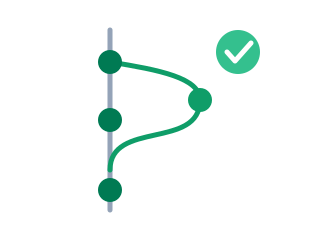
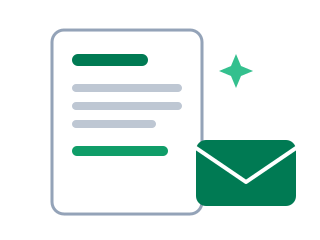

AI i praksis
Et hands-on kursus for voksne i arbejde. Vi bygger først og forklarer bagefter.

Idéen med kurset
De fleste AI-kurser starter med teori: hvad er en sprogmodel, hvordan trænes den, hvad er en token. Og først til sidst får du lov at prøve noget. Vi gør det omvendt.
Du bygger noget ægte
Inden for de første 30 minutter har du selv bygget en fungerende app helt uden at skrive en eneste linje kode.
»Hvad skete der lige?«
Når du har oplevet det, giver teorien mening. Vi forklarer begreberne ud fra det, du lige selv har gjort.
Noget du kan bruge i morgen
Alle øvelser tager udgangspunkt i hverdagsopgaver fra en almindelig arbejdsplads.
Modulerne
 Modul 1
Modul 1
Byg en app med Lovable
Vi hopper direkte ud i det: du beskriver en app med almindelige danske sætninger, og Lovable bygger den for dig. Bagefter taler vi om, hvad der egentlig skete, og hvor grænserne går.
Du lærer: at prompte, at iterere, og hvad en sprogmodel kan og ikke kan.

Modul 2GitHub + Claude Code
Fra legetøj til værktøj: vi lægger et projekt på GitHub og lader Claude Code arbejde i det som en kollega, der foreslår ændringer, som du godkender.
Du lærer: versionsstyring i menneskesprog, pull requests, og hvordan man samarbejder med en AI-agent.

Modul 3AI i din arbejdsdag
Fra byggeprojekter til hverdagen: vi bruger AI-assistenter på de opgaver, du allerede har. Mails, referater, lange dokumenter og regneark, med dit eget materiale i hænderne.
Du lærer: promptmønsteret, AI som førsteudkast, og hvordan du fanger fejl, før de går videre.
 Modul 4
Modul 4
Automatisér din egen hverdag
Vi bygger automatiseringer i den infrastruktur, din arbejdsplads allerede har: Power Automate i Microsoft 365, Google Workspace eller Zapier. Med AI som et trin i flowet.
Du lærer: udløsere og handlinger, connectors, og hvornår du skal have IT med på råd.
Fra dokument til podcast
Forstå komplekst indhold gennem andre modaliteter: med NotebookLM giver du AI'en bestemte kilder, får svar med henvisninger og omsætter tunge rapporter til en podcast. Vi prøver også Copilots udgave.
Du lærer: kildeforankring, podcastfunktionen, og hvornår lyd slår tekst.
Forstå AI: historien og ordene
Kursets teorimodul, med vilje til sidst: AI'ens historie i otte nedslag, hvordan en sprogmodel egentlig virker, og ordbogen over de ord, du møder i artikler og leverandørmøder.
Du lærer: historien, begreberne og de store diskussioner, så du kan tænke selv.
Flere værktøjer at prøve
Et idékatalog med tolv supplerende værktøjer til research, formidling, møder, data og automatisering. Hvert værktøj har konkret værdi, en kort kursusøvelse og et opmærksomhedspunkt.
Brug siden: som valgfri smagemenu på kurset eller inspiration til næste skridt bagefter.
Det formelle bag kurset
AI i praksis er et akademimodul på 5 ECTS under Akademiuddannelsen i Informationsteknologi hos UCL Erhvervsakademi og Professionshøjskole. Modulet kan tages selvstændigt eller som del af en fuld akademiuddannelse.
Datoer, tider, tilmelding og eksamen står hos UCL: læs mere og tilmeld dig på UCL's side om AI i praksis.
Din praksis: kursets røde tråd
Kurset er målrettet din specifikke profession. Derfor starter det med et valg, du træffer, før du møder op: vælg din praksis, altså den rolle og det fagområde, du vil bruge kurset på. Sagsbehandleren vælger sagsbehandling, konsulenten sine kundeforløb, koordinatoren sin planlægning.
Alle øvelser peger tilbage på det valg: appen i modul 1 bygger du til din praksis, hverdagsopgaverne i modul 3 henter du fra den, gentagelsen i modul 4 finder du i den, og det tunge dokument i modul 5 er et af dens typiske. Undervejs opdager du både, hvad AI kan i netop dit fag, og hvad din faglighed betyder, når rutinen bliver automatisk. Det materiale, du samler, er samtidig dit bedste afsæt for den afsluttende opgave.
Før du møder op
- Medbring en bærbar computer med en moderne browser (Chrome, Edge, Firefox eller Safari). Du skal ikke installere noget.
- Opret en gratis konto på lovable.dev. Det tager to minutter.
- Opret en gratis konto på github.com. Brug gerne din private mail, så kontoen følger dig og ikke jobbet.
- Vælg din praksis, jf. afsnittet ovenfor, og tænk over en lille irriterende opgave fra netop den, som et lille værktøj kunne løse. Den bruger vi som råstof fra første øvelse.